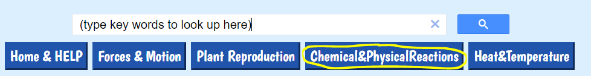

Science Inquiry Lesson
Educators: By following Steps 1 - 6, students are supported through the science inquiry stages of selecting good research questions, planning their background research, and conducting background
research to develop hypotheses for their research questions.
This lesson can also be broken down to focus on specific inquiry stages. For example:
- Steps 1 & 2: Students learn how to select good research questions.
- Steps 2 - 4: Students learn how to plan research for their research questions.
Students: First, download a booklet for this lesson
here. Follow the directions on this booklet for this
lesson.
STEP 1: First, you will watch a lesson on selecting a good research question. There is audio in this lesson,
so you may need headphones.
In your booklet, answer the question for STEP 1.
Click here to watch the video.
STEP 2: In the next lesson, you will pick your research question. Try to apply the methods used by the student in the
lesson you watched when picking your research question.
In your booklet, you will answer the questions for STEP 2.
This lesson also has audio, so you may need headphones. Click on the blank page to start the lesson.
Click here to begin this lesson.
STEP 3: HELP IN PLANNING YOUR RESEARCH
Next, you will watch a video that gives important tips on how to plan for your background research.
Take notes in page 3 of your booklet as you watch the video.
Click on the button below to watch the video:
STEP 4: PLAN YOUR RESEARCH
Now, you will need to think about what information you need to research to make your hypothesis for your research question.
To get ideas for what information to look up, you can watch (or re-watch) an animation for one trial of your
experiment.
Take notes of what happens in this animation in your booklet (page 3). Then write down the information you want to look up in your booklet (pages 4-5).
Click on your experimental topic below to watch (or re-watch) an animation for one trial of your
experiment:
Crystal Growth; Soda/Mint; Ice Melting; Gas in Balloon;
Inclined Plane; Objects Sinking; Greenhouse; Algae
STEP 5: HELP IN DOING BACKGROUND RESEARCH...
Background Research lesson: Next, you will watch a lesson in which a virtual "high school
student" is doing background research for their research question.
(This video has sound.)
Take notes of this lesson on page 6 of your booklet.
Click here to watch this video.
HOW TO USE THIS WEBSITE TO FIND INFORMATION...
You can find science units relevant to your research question by clicking on a blue button above for the
science area of your research question (e.g., "Forces & Motion").
You'll see a list of units relevant to the topic you chose.
Or, you can type what you would like to find out about in the search bar above (as shown below).
Click
on the little magnifying glass and you'll see a list of units that include those key words (you may see
some
Ads in the list of results: just ignore those). Just click
on the link of a unit you'd like to look at.

You can also click on the "Glossary" button at the top right side of the page to see a list of basic definitions of science
concepts.
When you're in a unit, you may need to click on the orange arrows at the bottom of the page
to
find the info you're looking for (since many units
have more than one page).
You can always come back to this page by clicking on the "Home & HELP" button at the top of the page
you're
on (the Help and four Areas of Science buttons will be on every page).
If you still need help and don't know what to do, ask your teacher (or another adult) to help you.
STEP 6: NOW, DO YOUR BACKGROUND RESEARCH!!
Follow the instructions starting on page 7 of your booklet, which will help you to find
information for your research question.
Click on magnifying glass below for
more info on searching within a page: